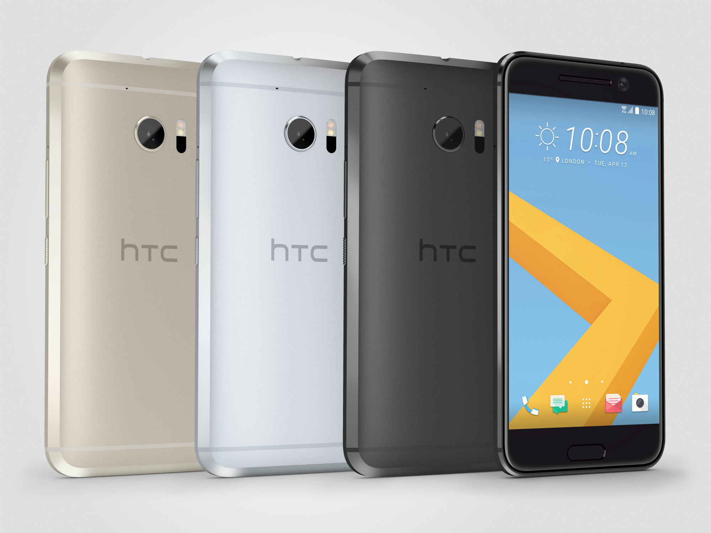

Smartphone
przenośne urządzenie telefoniczne łączące w sobie funkcje telefonu komórkowego i komputera kieszonkowego (PDA – Personal Digital Assistant). Pierwsze smartfony powstały pod koniec lat 90., a obecnie łączą funkcje telefonu komórkowego, poczty elektronicznej, przeglądarki sieciowej, pagera, GPS, jak również cyfrowego aparatu fotograficznego i kamery wideo. W nowszych modelach dostępne są też funkcje typowe dla PDA, jak zarządzanie informacjami osobistymi (ang. Personal Information Management). Większość nowych modeli potrafi odczytywać dokumenty biurowe w formatach OpenOffice, LibreOffice, Microsoft Office i PDF.
W 1 kwartale 2013 roku według firmy IDC po raz pierwszy sprzedano więcej smartfonów niż telefonów komórkowych. Smartfony stanowiły bowiem 51,6% (łącznie 216,2 miliona sprzedanych egzemplarzy) wszystkich urządzeń, które opuściły fabryki
Do najpopularniejszych smartphonów należą
- Iphone----(Strona Producenta)
- Samsung Galaxy----(Strona Producenta)
- One Plus 3----(Strona Producenta)
- LG G5----(Strona Producenta)
- HTC 10----(Strona Producenta)
| Producent | Nazwa | Zdjęcie(Kliknij aby powiększyć!) |
|---|---|---|
| Apple | Iphone |  |
| Samsung | Galaxy S7 | |
| One | Plus 3 |  |
| LG | G5 |  |
| HTC | 10 |  |